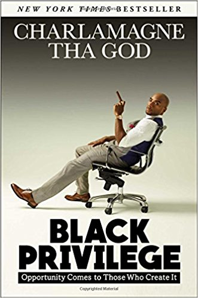

When the Taliban took control of the Swat Valley in Pakistan, one girl spoke out. Malala Yousafzai refused to be silenced and fought for her right to an education. On Tuesday, October 9, 2012, when she was fifteen, she almost paid the ultimate price. She was shot in the head at point-blank range while riding the bus home from school, and few expected her to survive. Instead, Malala's miraculous recovery has taken her on an extraordinary journey from a remote valley in northern Pakistan to the halls of the United Nations in New York. At sixteen, she has become a global symbol of peaceful protest and the youngest-ever Nobel Peace Prize laureate. I Am Malala is the remarkable tale of a family uprooted by global terrorism, of the fight for girls' education, of a father who, himself a school owner, championed and encouraged his daughter to write and attend school, and of brave parents who have a fierce love for their daughter in a society that prizes sons.
In the Land of Invisible Women
Unexpectedly denied a visa to remain in the United States, Qanta Ahmed, a young British Muslim doctor, becomes an outcast in motion. On a whim, she accepts an exciting position in Saudi Arabia. This is not just a new job; this is a chance at adventure in an exotic land she thinks she understands, a place she hopes she will belong. What she discovers is vastly different. The Kingdom is a world apart, a land of unparralled contrast. She finds rejection and scorn in the places she believed would most embrace her, but also humor, honesty, loyalty and love. And for Qanta, more than anything, it is a land of opportunity. A place where she discovers what it takes for one woman to recreate herself in the land of invisible women.
Black Privilege: Oppurtunity Comes to Those Who Create It
In his new book, Charlamagne Tha God presents his comic, often controversial, and always brutally honest insights on how living an authentic life is the quickest path to success. Beginning with his journey from the small town of Moncks Corner, South Carolina to his headline grabbing interviews with celebrities like Justin Bieber, Jay-Z, Nicki Minaj, Kanye West, and Hillary Clinton, he shares how he turned his troubled early life around by owning his (many) mistakes and refusing to give up on his dreams, even after his controversial opinions got him fired from several on-air jobs. Combining his own story with bold advice and his signature commitment to honesty at all costs, Charlamagne hopes this book will give others the confidence to live their own truths.